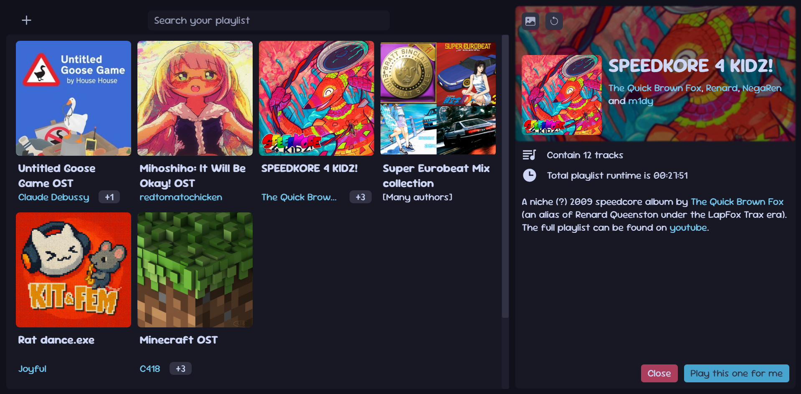

Basically
Why?
Youtube and Spotify are simply eating too much RAM for my average vibing/listening to music activity, so I quickly wrote a quick playlist app that run directly in my browser.
Yes, everything is running locally, the app does not try to host anything publicly, it's directly in your computer.

Project stats
| Category | Stuff |
|---|---|
| Kind of project | public |
| Project status | paused mint_duck is currently pausing this project and will go back to maintain it later |
| Github url | https://github.com/lilunderDuck/this-generic-playlist |
| Total commit | 45 |
| Licence(s) | none |